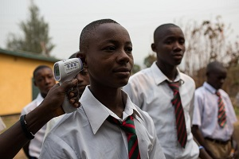

BAD HYGIENE PRACTICES IN THE COMMUNITY
Poor hygiene and its consequences
Poor sanitation which has always been associated with Africa, has significant
negative effects on the national economy and that 49%
of all reported sickness and injuries in Sierra Leone is related
to poor sanitation. Lack of adequate sanitation is a major threat to the
environment which includes the degradation of the urban environment by the
indiscriminate disposal of solid and liquid waste and the pollution of fresh
water and lakes by untreated human waste, the result being smaller, contaminated fish catches.
The cost of environmental damage includes discouragement of the tourist trade,
reduced overseas markets and revenue for fish products, reduced production from
fisheries and increased purchase costs for chemical and mechanical clean-up operations.
The cause of this are all sanitation-related, either from poor lake water quality or
poor hygiene during the catching process. In the 90s down to 2000,
there were more government aided primary schools for students; of these schools, 44.5% had water supply
Many schools, particularly rural schools had no latrines at all and of those with latrines
most did not have separate latrine facilities for girls and boys. Lack of latrines especially
separate latrines for girls was identified as the worst school experience for girls. This illustrates
that the issue of poor sanitation is one of the special conditions which prevent girls from fuller
participation and achievement in schools and to an extent force them out of school.
This gives a case fatality rate of 4.3%, causes identified for the diarrhea outbreaks included overcrowding,
lack of sanitary excreta disposal facilities, high water-tables, lack of safe drinking water, poor food hygiene
in markets (vendors and purchases), and inadequate solid waste disposal. Along with a higher incidence of diarrhea,
slum dwellers in swampy areas suffer a greater incidence of malaria special gender needs. Women and girls are the
caretakers of the home charged with the responsibility of cooking (86%) water collection (70%) and fire wood collection (73%)
child care (62%) and (88%) care for the sick and elderly...Click here for more on this article
BENEFITS OF GOOD HYGIENE PRACTICES
CONAKRY/FREETOWN/MONROVIA, 12 August 2015 – As students in Guinea, Liberia and Sierra Leone begin their summer vacations, measures put in place to protect them from the Ebola virus are being credited with having helped keep classrooms free from any infections.
Across the three countries, there have been no reported cases of a student or teacher being infected at a school since strict hygiene protocols were introduced when classes resumed at the beginning of the year after a months-long delay caused by the virus. In Liberia, two schools were decontaminated as a precaution following the death of a student in June 2015 and the infection of another in July 2015.
The protocols, developed by UNICEF and its partners, include taking the temperature of children and staff at the school gate and installing handwashing stations. They also involved the distribution of millions of bars of soap and chlorine, and the training of tens of thousands of teachers and administrators in the protocols and in providing psychosocial support.
Establishing and implementing the protocols across three countries required months of preparations.
“The massive effort that went into making schools as safe from Ebola transmission as possible appears to have paid off,” said Geoff Wiffin, UNICEF Representative in Sierra Leone. “Children learned in school how to protect themselves and others from Ebola, and they passed on those messages to their parents and their communities. This played an important role in the battle against the epidemic.”

A boy’s temperature is taken when he arrives at school in Kenema, Sierra Leone.
Temperature screenings are part of safety protocols in schools across the country to minimize the risk of Ebola transmission.